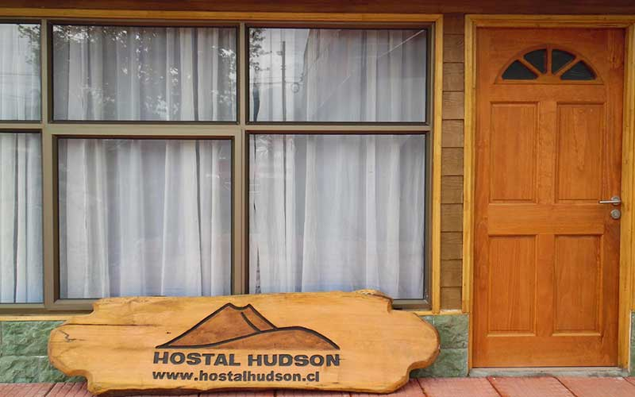
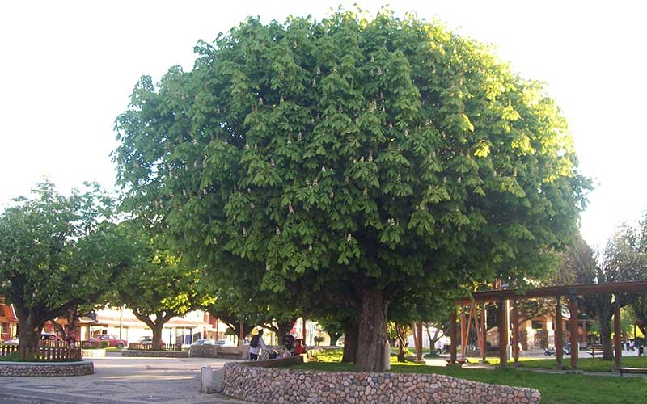
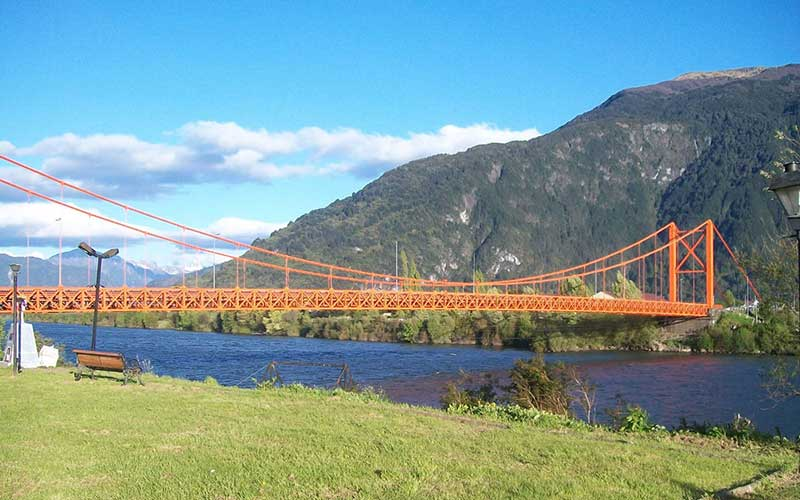

1. Llegar a cualquier hora sin apuro
La recepción está abierta las 24 horas todos los días. Si tu vuelo a Balmaceda o el camino se retrasa, nos avisas por WhatsApp y te esperamos con las llaves y la pieza calefaccionada.
Somos un hostal familiar a orillas del río Aysén y a dos cuadras de la plaza. Aquí no llegas a una recepción impersonal ni a una caja con código: te abrimos la puerta en mano las 24 horas del día.


Quienes viajan por la Carretera Austral o vienen a trabajar a la región buscan un lugar donde descansar de verdad. Cuidamos tres momentos clave de tu día en el hostal:
La recepción está abierta las 24 horas todos los días. Si tu vuelo a Balmaceda o el camino se retrasa, nos avisas por WhatsApp y te esperamos con las llaves y la pieza calefaccionada.
Cada noche incluye desayuno continental servido en nuestro comedor revestido en madera. Además, tienes a disposición la cocina equipada del hostal durante tu estadía.
Realizamos aseo diario en las habitaciones antes del mediodía, con estacionamiento gratuito dentro del recinto (sujeto a capacidad) y Wi-Fi en toda la casa.

“La habitación muy comoda, la vista al río Aysén invita a quedarse y descansar, calentito en los días de frío y lluvia de la Patagonia... y el desayuno? El mejor que probamos desde Puerto Montt hasta Villa O’Higgins.”Rodrigo Valenzuela · Huésped verificado en Google
Las seis reseñas publicadas aquí son reales y textuales. Si quieres consultar por una fecha especial o vienes en familia, escríbenos directo.
Consultar por WhatsApp“Muy acogedor, ideal para pasar días de descanso. Las piezas impecables y equipadas con calefacción. Los desayunos exquisitos y contundentes. Tienen un perrito ovejero y mis hijos jugaron y se entretuvieron con él. 100% recomendados.”
Oscar Liendo · Reseña de Google“Recomendado en un 100%. Anfitriones muy preocupados. Piezas hermosas y limpias. Lugar céntrico. Desayuno muy rico.”
Dedy Lincoqueo Soto · Reseña de Google“El hostal super lindo, limpio y muy bien ubicado! :) Lo pasamos muy bien en nuestra estadía en Pto. Aysen. ¡Muchas gracias por su hospitalidad y buena onda! Sin duda volveremos!!”
Stephany Grego · Reseña de Google“Excelente atención, muy amable, excelente desayuno. Siempre atentos.”
Santiago Pernigotti · Reseña de Google“Muy bien servicio, cómodo, hermosa vista al río y buena ubicación, muy recomendable”
Patricio Fuentes · Reseña de Google¿Ya alojaste con nosotros?
Si pasaste por el hostal y quieres compartir tu experiencia o enviarnos fotos de tu viaje por Aysén, escríbenos por WhatsApp.
Mostramos únicamente las fotografías reales de nuestras habitaciones. Para conocer la tarifa según tus fechas y cuántas personas viajan, consúltanos directo.

Pensada para quien viaja solo por trabajo o recorriendo la región y busca una cama cómoda, silencio por la noche y un desayuno casero temprano antes de salir.
Ver detalle de habitaciones →
Dos camas individuales con buena iluminación natural, calefacción para las noches frías y toda la tranquilidad de una casa familiar.
Ver detalle de habitaciones →Desayuno incluido cada mañana y cocina equipada disponible para los huéspedes.
Libre horario de llegada con entrega de llaves en mano todos los días del año.
Internet inalámbrico sin costo tanto en las habitaciones como en los salones comunes.
Disponible para quienes llegan en vehículo, hasta completar la capacidad del recinto.
TV por cable en las habitaciones para descansar al final de la jornada.
Servicio de mucama todos los días antes del mediodía.
Estamos frente al puente Presidente Ibáñez y a solo dos cuadras de la Plaza de Armas de Puerto Aysén, cerca de bancos, oficinas y comercio local.

